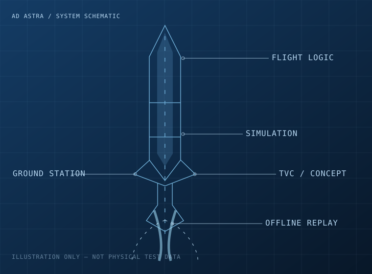
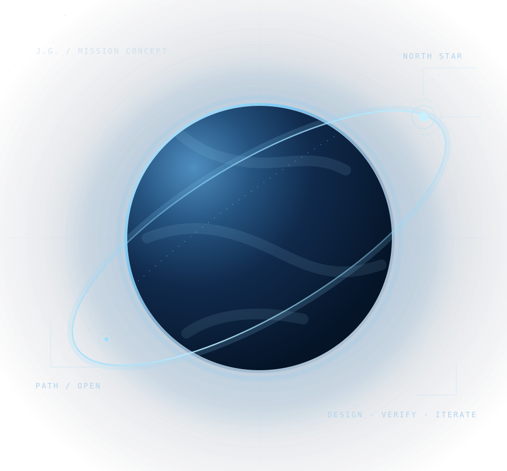
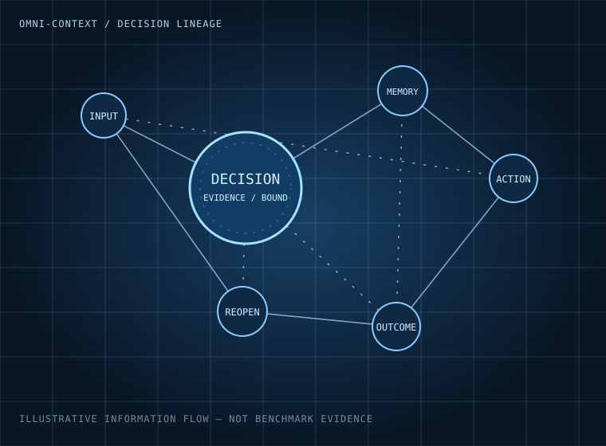
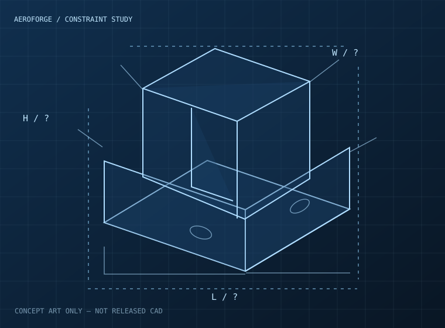

FIELD / 01 / CONCEPT VISUAL
独立开发者 / 飞行器制造工程本科生
把目光投向
更远的星空。
我是 郭家吉（Jiaji Guo）。正在用 AI 产品、工程软件、飞控仿真和真实项目，逐步积累走向航天的能力。最终希望推动一种未来：普通人也能拥有探索太空的机会。
VISUAL CONCEPT · 2026
研究背景飞行器制造工程 · 本科
当前实践AI × 软件 × 航天工程
长期目标降低太空探索的门槛
继续探索North star / 长期使命
理想可以很远，
证据必须落地。
航天不是一张概念图，也不是几段漂亮的演示。它需要资金、产业协作、试验数据、安全边界与长期积累。因此，眼下我选择先解决现实中足够具体的问题：从能够替用户节省时间或成本的 AI 产品出发，在产品和商业实践中积累资源，再逐步迈向机器人、工程软件和航天系统。
我想做的，不只是又一个 AI 应用，而是逐步建立一套能够把 计算、控制、制造与智能 连接起来的真实工程能力。
01 / DISCOVER
发现真实问题
从用户实际工作的重复步骤、成本和失误中识别有价值的需求。
02 / BUILD
做出可验证产品
优先把软件做成能交付、能复测、能根据反馈改进的工具。
03 / LEARN
积累工程底座
继续学习控制、制造、仿真、嵌入式与软硬件协同。
Selected engineering / 精选项目
真正做过的事情，
比头衔更重要。
每个项目都标注当前证据等级。以下为研发方向与已开展的工作，不把软件测试当作硬件安全认证，也不把私有原型包装成已经上线的商业产品。

SYSTEM / 02 / CONCEPT VISUAL
TOOLCHAIN / 03 / CONCEPT VISUAL工程工具链 / Engineering OS
AeroForge
研究让 AI 真正参与机械工程任务，而不只是生成看起来合理的几何图。方向包括需求约束、计算、CAD/CAE 工作流、工具执行、设计修改与独立验收，持续打通从自然语言到可信工程结果之间的断层。
当前证据：私有工程原型；尚不能宣称具备成熟的端到端自动设计能力。
其他正在构建的项目
已显示 9 个项目
dsh-pilot
为 DeepSeek Harness 增加可观察的真实浏览器操作：DOM 快照、引用式交互、隔离会话和可接管的控制面板。
公开仓库 · 插件迭代中
浏览仓库 ↗FlowBreak
通过渐进提醒和可选的阻断机制，减少连续刷短视频与社交应用的时间。本地优先，保护使用者控制权。
MVP · 发布准备中
浏览仓库 ↗LocalMiniDrama
探索剧本、分镜、首尾帧与视频生成协同，降低重复劳动，并逐步改善镜头连续性和内容质量。
私有实验产线 · 质量仍在迭代
咨询项目 ↗AEP Standard
研究模型与微控制器之间轻量、受约束的物理执行接口，关注设备能力暴露与执行边界。
公开草案 · 尚非行业标准
浏览仓库 ↗DeltaStream
基于 Moonlight Android（GPLv3）二次开发，探索更贴近平板操控习惯的 PC 低延迟串流客户端。
开源二次开发 · 研发中
浏览仓库 ↗Hone
探索 CLI、桌面控制台、后台网关与手机端协作的多模型 AI 编程环境，以及工具与安全交互方式。
Alpha / 研发测试中
浏览仓库 ↗JG AI Glasses
探索透明单目 HUD、手机端 OCR/翻译与实体交互设备的协同。当前重点是软件仿真、固件准备和硬件约束验证，而非已经完成的眼镜成品。
工程准备阶段 · 实物未完成
咨询项目 ↗Yudei · eVTOL
研究站立式载人电动垂直起降飞行器的人机布置、安全边界与控制系统问题。仍处于探索与验证前阶段，不宣称已实现安全载人飞行。
私有研究方向 · 非飞行验证产品
咨询项目 ↗Mispricing Lab
搭建多市场数据、策略研究、实验复现与风险检查的研究工作流，强调实际数据与不确定性，而不是承诺交易收益。
私有研究系统 · 不构成投资业绩证明
咨询项目 ↗关于公开项目，请以对应仓库的 README、测试数据和当前状态文档为准；示意图并非实物试验照片。
From D to C / 成长路线
一条路，
走向更大的世界。
我目前没有现成的航天公司，也不把未来锁定为唯一的创业形式。先通过 AI 商业化积累能力与资源，再拓展到实体工程，是眼下相对可执行的路线。
AI 产品价值验证
找到足够真实的痛点，尝试让工具节省时间、成本或减少错误。
可复现的工程系统
将软件、控制、机械设计与测试连成完整工作流，严格记录失败和边界。
团队、资源与产业协作
寻找真实合作伙伴、商业反馈与工程场景，而不是孤立地增加项目数量。
让更多人探索太空
在技术、资金和组织条件逐步成熟后，寻找可信的航天产业切入方式。
这不是已经完成的里程碑，也不是资金或时间承诺，而是一条需要不断用现实反馈修正的行动路线。
Evidence / 工程证据
欢迎检验，
而不仅仅是相信。
真实工程的价值，不来自华丽的截图。这里直接公开部分可以追溯的技术文档和限制条件。
01
AI Rocket · 离线回放手册
软件回归与命令隔离的证据范围；不等于硬件或飞行合格证明。
02Omni-Context · 产品基线
明确工程起点、当前局限以及尚未证明的性能结论。
03FlowBreak · 当前状态
公开测试、已知问题以及距离正式发布仍有的门槛。
仓库和文件内容可能继续演进；每个项目的最新验证等级以项目内部权威记录为准。
About / 关于我一直在学习。
一直在学习。
也一直在做。
我是一名飞行器制造工程本科生，而不是已经完成航天产品的企业创始人。对我来说，理想的分量来自日积月累的学习、实验、失败和修正。
2026 年暑期，我在杭州参与过 AI 工作流与协作软件相关开发。课堂之外，我持续把控制工程、软件系统和机械设计中的概念放进自己的项目里试验，也正在学习如何将技术能力转化为可持续的产品价值。
理想不应替代证据，证据也不应限制想象。
进入飞行器制造工程专业
就读南昌航空大学科技学院，开始把课堂知识与独立开发结合。
在真实软件工作中学习
参与杭州暑期实习，推进 AI 开发工具、短剧工作流及工程项目。
从原型走向可验证成果
持续整理公开仓库、软件测试、工程文档和待解决的问题。
开放的航天长期目标
就业、创业、深造都可能成为路径，核心是逐步积累探索太空所需要的能力。
我也喜欢音乐、钢琴、旅行和自然。我希望技术最终服务于有趣而自由的生活。
飞行器制造控制理论与动力学飞控仿真嵌入式系统AI Agent工程自动化Web / 桌面软件开源协作产品验证